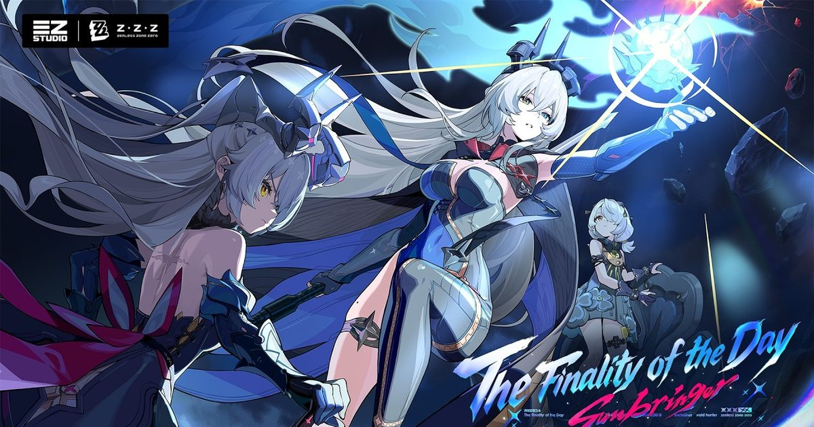

2026-11-20 · 版本深读 / 系统拆解

11 月 20 日晚的前瞻节目上，HoYoverse 公布了《绝区零》3.4——官方英文标题 The Finality of the Day，12 月 2 日上线，天空岛罗斯卡利法（Roscaelifer）篇收束， 同时开启与《崩坏：星穹铁道》的联动。当晚几乎所有中文讨论都卡在同一句上： 「登录就送 S 级知更鸟」。
送是真的：更新后登录就能领 S 级知更鸟（以太 · 防护），外加把角色直升到 40 级的材料， 和一整套主词条已配好的驱动盘。这是它这一版最容易被截图的那条消息。 但如果你只看到「送」，就会漏掉这版真正在发生的事—— 官方没有降价，它只是把入口挪到了门口。
免费清单很实在，值得逐项点名：知更鸟本体（以太属性、防护定位）、 40 级养成材料、一整套驱动盘且主词条匹配。 注意第三项——驱动盘送的是「配好的」，不是「随机掉的一堆」，这一条比材料值钱得多： 它省掉的不是刷本时间，是你为了她专门去凑一套词条的那一周。 按正常节奏，一个防护角色从零到能上场，卡人的从来不是等级，是那六个位置的主词条。
同时官方也把丑话说在了明面上：知更鸟自己的调频频道照开，整版都在。 也就是说她既是登录奖励，也是卡池角色——愿意为她抽影画（重复突破）的人， 依然有地方花钱。这一手把「白送」和「付费深度」分得很干净： 送的是 0 命能用，卖的是往上的每一层。
这版主推的新角色叫 Sunbringer，官方标注 Genesis Flare · Armorer， 并称其为「首位 Enchainer」——顺带说一句，中文圈对这两个词还没有统一译法， 英文媒体里也常把 Armorer 和上一代的 Rupture 混着写，看的时候要留个心眼。 她的定位是罗斯卡利法的领袖、新的虚空猎手，机制上则是本作第一次把 三个人塞进一个角色格。
而 Armorer 这一系的资源叫 Sharpness（锋锐）。 这不是一个可有可无的数值，它是这套体系能不能转起来的开关。 知更鸟的终极技，效果之一就是给 Armorer 类角色回复锋锐。 把这两句话放在一起，免费的动机就藏不住了。
逻辑链是这样的：你没有 Sunbringer，知更鸟就是一个很好用但定位偏窄的护盾辅助； 你有了 Sunbringer，知更鸟就从「辅助」变成体系钥匙—— 她解决的是新角色最尴尬的那个问题：锋锐断了要等、要站桩、要放弃一轮输出。 免费给你钥匙，是因为门在后面。 这不是什么阴谋，这是很标准也很诚实的设计：把「体验新体系」的门槛压到零， 把「把新体系玩到上限」的成本留给卡池。
官方给的机制链条值得完整念一遍，因为它是这版最结构性的一次改动：
① Armorer 类攻击会给敌人叠 Gash（裂伤）； ② 消耗 Gash 触发 Maim（残损），同时积累 Wishfire（愿焰）； ③ 愿焰足够时，长按普攻让 Eldreda 掷枪入场，接一记协同的连携攻击； ④ 喧响值足够时，放出两段式终极技，一次性引爆场上所有 Embermark（燼印）， 触发 Emberburst 的爆发伤害。
三个人的分工不是皮肤级别的：Eldreda 拿枪、Lindverne 拿大剑、Dracaene 拿盾。 防御支援弹反成功时 Dracaene 入场、连携攻击触发时 Lindverne 入场， 三个人同时站在场上的那一刻，才是终极技能打出全额的那一帧。
这才是这次改动真正动到根上的地方：它把「切人」从玩家的手指上收走了。 过去的 ZZZ 里，手感来自你自己按出完美闪避、自己决定什么时候换谁上场； 而 Sunbringer 的切人是被技能条件驱动的—— 你弹反，盾自己来；你连携，剑自己来；你按终极技，枪自己上。 操作门槛降了，但「窗口」这个概念被抬到了台面上： 你不再需要手快，你需要记得住自己在第几段。
从 2.x 的命破体系到 3.x 的 Armorer，这条线是连续的： 动作游戏正在一格一格往「资源时序游戏」挪。喜欢的人会觉得这是深度，不喜欢的人会觉得这是 QTE。 我倾向前者，但要承认代价——当你把节奏交给系统，手感就不再是你能练出来的东西。
联动角色最怕的是「把模型搬过来，技能改个名字」。这一版两个人都做了真正的翻译。
知更鸟在《星穹铁道》里是「和声」：靠行动提前和攻击力加成让全队多打一轮， 本质是时间。到了新艾利都，她的技能变成了： EX 特攻触发快速支援并进入离场状态，按生命上限给全队加防， 离场期间持续打「余震」，余震命中或队友攻击时给她攒能量， 能量够了再切回场上补一层盾，终极技顺手给 Armorer 回锋锐。 「行动提前」被换成了「离场持续输出 + 盾的循环」，时间被翻译成了耐久。 这是同一套性格（在场外照顾所有人），换了一种语言说。
卡芙卡在《星穹铁道》里靠持续伤害引爆，到这边变成电属性异常： 「猎人之序」状态下可以选斩击或射击，分别强化直伤或加快异常累积， 斩击命中已陷入异常的敌人会追加雷击。「引爆 DOT」被换成了「紊乱伤害 + 紫电」—— 因为 ZZZ 没有 DOT 那套挂载系统，硬搬会变成一个没有乘区可吃的空壳。
这两次翻译说明联动方是真的读了接收端的规则书。 而它们的差异也预告了商业节奏：知更鸟能送，是因为她的价值主要在「体系开关」上； 卡芙卡不能送，是因为她的价值在「紊乱队的输出上限」上。
12 月 2 日到 1 月中旬，大约 45 天里，你要面对的是：
首日开、整版都在：Sunbringer 的调频频道，以及她的 S 级专属音擎 Dragonfire Mirage（首日同开，没有早期窗口压力，这点算是良心）。 同样整版都在：知更鸟的调频频道（给想抽影画的人）。 下半场：卡芙卡，同期还有 S 级物理异常 Alice 和音擎 Practiced Perfection 的复刻。 另外单独算钱：新邦布 Sleepwalkerboo 走的是邦布频道—— 它会在 Sunbringer 在队时给全队叠伤害，它是独立支出，不在任何角色池里。
所以真正的问题不是「送不送」，而是「你的抽数够不够覆盖两次意图」。 我的建议顺序很朴素：想玩新体系，先保 Sunbringer 本体， 专武在首日同开、整版可抽，可以等下半场的实际强度评测再补； 已经有成型紊乱队的，卡芙卡优先级要高过专武； 而完全不想碰 Armorer 的人，这一版对你来说就是「领个知更鸟 + 看剧情」， 一个抽数都不用花，这是 3.4 最舒服的位置。
另外两条容易被漏掉的福利：活动「Lost in a Theatrical Dream」是拍剧题材， 有潜入和突袭环节，奖励含波姆波姆邦布；累计充值活动「Thanks for Watching」 给的纪念券可以换自选 S 级和音擎，卡芙卡的专武 Aria Left by the Spider 也在自选里。 还有一条纯内容向的：三位阳炎各自有信赖事件，三个都刷满会解锁一个支线—— 内容是帮她们偷偷策划生日会。这大概是本版我最期待的一段。
我们的观察：这一版的信息结构很有意思——官方把最容易被传播的那条（送 S 级） 放在最前面，把真正的系统改动（锋锐 / 三人一体）放在机制说明里， 把最花钱的部分（邦布、专武、下半场双复刻）放在最后。 三条信息的顺序，本身就是一份运营策略。 会读的人能从「送谁」倒推出「这版主推什么」：送的是知更鸟，主推的是 Sunbringer， 而 Sunbringer 需要锋锐——这三句话连起来，就是这版的产品逻辑。
我们的观点：免费送联动 S 级，短期是拉新的最优解，长期是在稀释「联动限定」这四个字。 当联动角色可以白拿一次，玩家对下一次联动付费意愿的锚点就被压低了。 但从这版的具体做法看，官方已经想清楚了对冲方式： 送的是 0 命可用的「功能位」，卖的是影画与专武的「上限位」。 这个切分比「送一个弱化版」要体面得多——它没有侮辱任何一个角色的强度。
我们的案例对比：拿上个月 NIKKE 那个新 SSR Sky 来对照最清楚。 那是一个「技能文本豪华、数值互相打架」的角色：35 秒的增益配 40 秒的冷却， 写着「最多叠 3 层」但永远叠不上；她自带代价，且代价比收益重。 而 Sunbringer 这套设计的取向刚好相反——它的复杂度不在数值上，在时序上。 你不需要背数字，你需要在正确的窗口按一次终极技。 前者是「读了技能说明也算不明白」，后者是「打两把就懂了」。 两种复杂度的体验差得很远：前者让人不想抽，后者让人想练。
我们的实验：我们按官方口径把「免费知更鸟」折算了一下成本： 40 级材料加一整套同主词条驱动盘，对一个正常进度的账号来说， 大致相当于省掉一到两天的自然回体，外加最耗神的词条筛选环节。 这个折算不算大，但有一件事它买不到——它买到了「你可以先试试再决定抽不抽」。 对一套以时序为核心的新体系来说，先给一段无成本的试用期， 比任何宣传片都有说服力。这也是我们认为这版最聪明的一步。
我们的评分理由：8.0 评的是「版本内容密度与系统野心」，不是评福利多少。 加分项：三人一体是本作迄今结构上最大胆的一次角色设计，把切人做成技能条件虽然牺牲了手感自由度， 但确实换来了一套新的节奏语言；两次联动「翻译」都做了真正的适配而不是换皮； 免费 S 级配齐材料与驱动盘，把新体系的门槛压到了地板； 首日开池、整版都在，没有制造「三天内必须决定」的焦虑；三人信赖事件加生日会支线是纯内容加分。 扣分项：Sharpness 这条资源线绑得太紧，Sunbringer 与知更鸟之间存在明显的「钥匙—门」依赖， 没抽主推的人拿到的是一个功能被砍半的辅助；邦布走独立频道，实质是第四次付费点； 45 天里塞进四个池子加两次复刻，抽数规划的压力被转嫁给了玩家。 一句话总结：这是一版把「怎么让人愿意试新体系」想得比「怎么让人多花钱」更透的更新—— 它送的那把钥匙是真的，只是门也确实在后面。
版本信息：3.4 于 12 月 2 日上线，登陆 PS5 / Xbox Series / PC（含 Steam、Epic）/ iOS / Android 全平台。 罗斯卡利法主线在此收束，敌人「巢主」现身，三位阳炎首次并肩作战， 另有一位「意外角色」登场但官方未点名——这条线建议自己看剧情，别提前搜。